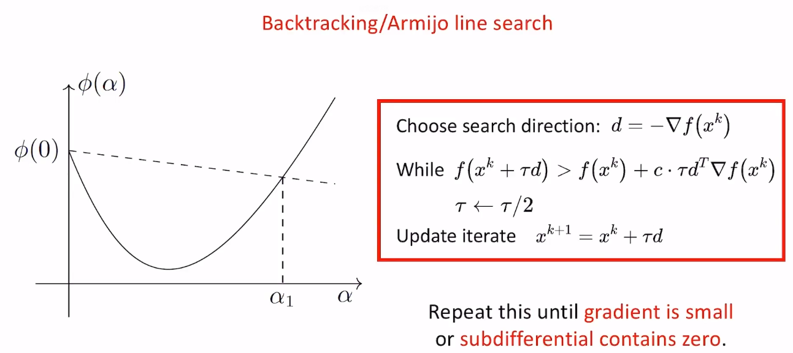
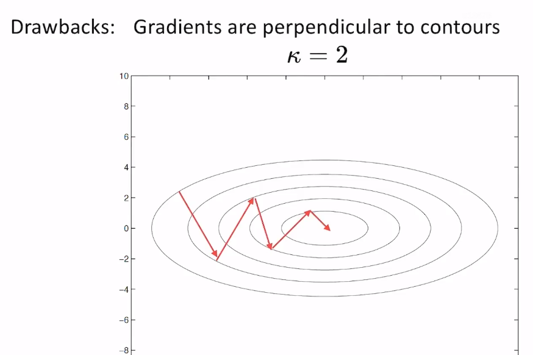

Steepest Gradient Descent
最速下降法
- 沿着梯度（grad或least-norm sub-grad）的负方向更新
- $$x^{k+1}=x^{k}-\tau \triangledown f(x^{k})$$
- 步长选择
- Constant step size（固定步长）
- $$\tau=c$$
- Diminishing step size（渐消步长）
- $$\tau=c/k$$
- Robbins-Monro rule for expensive function
- 鲁棒性很强，一定可以收敛到local minimize
- 如果函数是非光滑的或者梯度的计算存在一个方差较大的噪声时，可以用这种方法，但收敛速度相对比较慢
- Exact line search（精确线搜索）
- $$\tau=argmin_{\alpha}f(x^{k}+\alpha d)$$
- 找到一个\(\alpha\)使得函数下降最多，这本身就是个优化问题（将多维优化变成了一维优化），求解很难，因此工程中常用下面一种方法
- Inexact line search（非精确线搜索）
- $$\tau\in\lbrace \alpha | f(x^{k}) - f(x^{k}+\alpha d)\geq -c\cdot \alpha d^{T}\triangledown f(x^{k})\rbrace$$
- Armijo condition（充分下降条件）

- \(\tau\)初始化为1.0，\(c\in (0,1)\)
- \(\tau\)每个循环都减半，直到函数值第一次落到上图虚线的下方，结束循环，更新\(x\)
- 注意，函数只有次梯度的话需要沿着least norm grad的反方向更新，循环结束条件是次梯度包含0向量
- Inexact line search虽然迭代次数比Exact line search更多，但每次迭代的耗时少很多，因此大部分情况下总时间也少
- Constant step size（固定步长）
- 缺点

- 从上图可以看出，条件数为2的时候，sgd就需要震荡多次才能到最优解，当条件数非常大的时候（椭圆的上下沿接近平行），那更新过程就会震荡没完了。因此为了更快收敛，我们除了利用梯度信息，还需要用到曲率信息